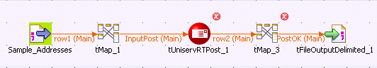
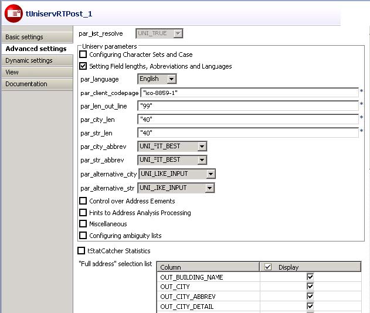

![[Warning]](../images/warning.png) | |
This component will be available in the Palette of the studio on the condition that you have subscribed to the relevant edition of Data Quality Service Hub Studio. |
|
Component family |
Data quality | |
|
Function |
tUniservRTPost provides postal validation and correction of addresses, which is critical to improving the quality of addresses. This way, you will be more successful in personalized one-on-one marketing, reducing costs and increasing the efficiency and cost-effectiveness of address management in all the applications. | |
|
Purpose |
tUniservRTPost helps to improve the addresses quality, which is extremely important for CRM and e-business as it is directly related to postage and advertising costs. | |
|
Basic settings |
Schema and Edit schema |
A schema is a row description, i.e. it defines the number of fields that will be processed and passed on to the next component. The schema is either built-in or remote in the Repository. |
|
|
Host name | Server host name between double quotation marks. |
|
|
Port | Listening port number of the server between double quotation marks. |
|
|
Service |
The service name is |
|
|
Use rejects |
Select this check box to collect faulty addresses via the rejects connection. Usually they are the addresses with the post result class 5. Valid values for the result class are 1-5. The value must be between double quotation marks. If this check box is not selected, the faulty addresses are output via the Main connection. If the check box is selected but the rejects connection is not created, the faulty addresses are simply rejected. |
|
|
Use File for ambiguous results |
Select the check box to define a file for writing the selection list to it. When an address cannot be corrected unambiguously, a selection list is created. This list can be further processed via the AMBIGUITY connection. All potential candidate results then run via this connection. The schema of this connection is preinitialized with the arguments of the dissolved selection list of the service 'post'. |
|
Advanced settings |
Uniserv Parameters |
Select this check box to define the corresponding parameters. For detailed information, please refer to the Uniserv user manual International Postal Framework. |
|
|
tStatCatcher Statistics | Select this check box to collect log data at the Job and the component levels. |
|
|
“Full address” selection list |
Select the check box Display to show all the columns. Or, select the check box next to a particular column to show it alone. This option controls the content of the file for ambiguous addresses. Only selected columns would be written into the file. |
|
Usage |
tUniservRTPost requires an input set. Its postal validation will then be checked. In case of an unambiguous result, the corrected set will be output via the Main connection. If the address is ambiguous, the potential candidates will be output via the Ambiguity connection. If an address was not found, it will be passed on via the Reject connection. | |
|
Limitation |
To use tUniservRTPost, the Uniserv software International Postal Framework and the required post servers must be installed. | |
This scenario describes a batch job that checks and corrects the addresses and postal codes from a file.
The input file for this scenario is already saved in the Repository, so that all schema metadata is available.
In the Repository view, expand the Metadata node and the directory in which the file is saved. Then drag this file into the design workspace.
The dialog box below appears.

Select tFileInputDelimited and click OK to close the dialog box.
The component is displayed in the workspace. The file used in this scenario is called SampleAddresses. It contains address data that comes with a country code. The street and house number are saved together in the street field, while postal code and city are respectively saved in separate fields.
Drag the following components from the Palette into the design workspace: two tMap components, tUniservRTPost and tFileOutputDelimited .
Connect the components via Row > Main.
During the process, accept the schema from tUniservRTPost by clicking Yes in the validation window.

Double-click tMap_1 to open the schema mapping window. On the left is the structure of the input file and on the right is the schema of tUniservRTPost. At the bottom is displayed the Schema Editor, where you can find the attributes of the individual columns and edit them.

Assign the columns of the input file to the respective columns of tUniservRTPost. For this purpose, select a column of the input source and drag it onto the appropriate column on the right side. If fields from the input file are to be passed on to the output file, e.g. the names or the IDs, additional fields must be defined.
![[Note]](../images/note.png)
When assigning the fields, note that street and house number can either be saved together in the street column or respectively in separate fields. If your data list does not have a country code but the addresses are from the same country, the relevant ISO-country code should be manually entered between double quotation marks in the column IN_COUNTRY. If you have an international data list without country code, just leave the column IN_COUNTRY empty. For detailed information, please refer to the Uniserv user manual International Postal Framework.
Click OK to close the window.
Double-click tUniservRTPost and enter its Advanced settings view.
Change the parameters and field lengths if necessary and select the output fields.
Make sure sufficient field length is defined. For detailed information, please refer to the Uniserv user manual International Postal Framework.
Double-click tMap_3 to open schema mapping window. On the left is the schema of tUniservRTPost and on the right is the schema of the output file.

Click OK to close the dialog box.
Double-click tFileOutputDelimited to enter the details for the output file.
This scenario is closely related to the one above. But the difference is that, the addresses that cannot be assigned are written into a separate file for manual checking. Additionally, to write ambiguous addresses in a separate file, the procedure is the same as described here.
Create a job as described in the previous scenario.
Drag the following additional components from the Palette into the design workspace: tMap and tFileOutputDelimited.
Double-click tUniservRTPost to open its Basic settings view.
Select the Use rejects check box and enter "5" in the field if result class greater or equals to. This is the result class from the check of postal codes in addresses, which contain too few or unfeasible data.

Connect tUniservRTPost with tMap_5 via Row > Rejects.
Connect tMap with tFileOutputDelimited via Row > Main.

Define the fields for the output file in the mapping window.